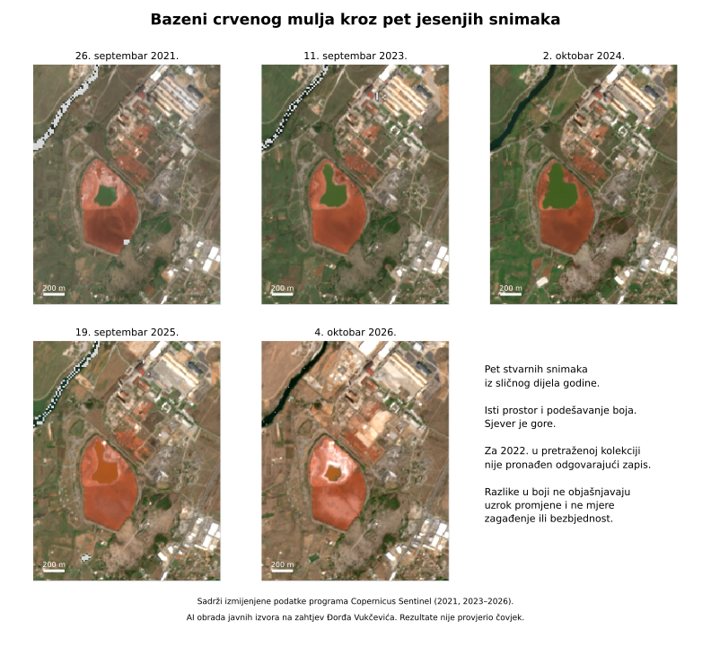
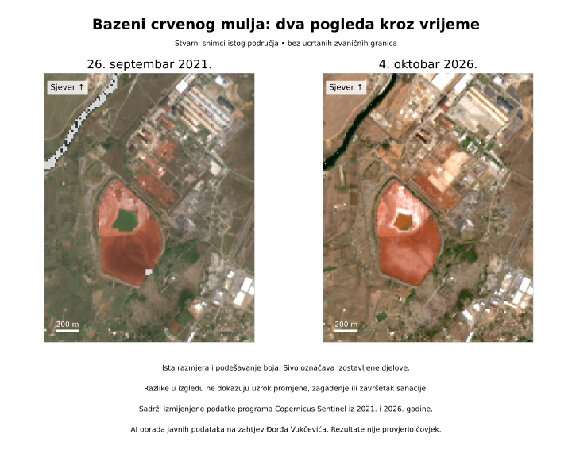
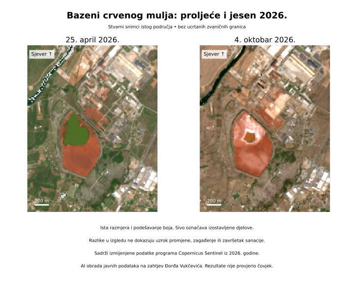

Državna informacija o KAP-u i bazenima
Istorija, površine, prašina i sanacija.
Otvori izvor ↗Sajt, tekstove, mape i analize pripremili su isključivo AI agenti na zahtjev Đorđa Vukčevića, iz javno dostupnih izvora. Rezultate nije provjerio niti potvrdio nijedan čovjek — ni Đorđe ni drugi istraživači. Sve je preliminarno; nijedno arheološko otkriće nije potvrđeno.
INDUSTRIJSKI PREDIO / KAP
Šta pokazuju stvarni satelitski snimci, a šta je zabilježeno u javnim dokumentima?
PET STVARNIH JESENJIH SNIMAKA
Uporedi isti predio iz pet godina. Mijenjanje boje ne znači automatski zagađenje ili sanaciju.

Snimci iz 2021, 2023, 2024, 2025. i 2026. Za 2022. nije pronađen odgovarajući snimak u pretraženoj kolekciji, što ne znači da snimak ne postoji.
Copernicus Sentinel-2 · Izmijenjeni podaci, obrada AI agenata.
Uvećaj i istraži sliku
Isti prostor u dva datuma. Slika ne mjeri hemiju niti procenat sanacije.
Copernicus Sentinel-2 · Izmijenjeni podaci, obrada AI agenata.
Uvećaj i istraži sliku
Sezonski izgled bazena i okoline uz iste postavke prikaza. Ne potvrđuje stanje nasipa.
Copernicus Sentinel-2 · Izmijenjeni podaci, obrada AI agenata.
Uvećaj i istraži slikuŠTA GOVORE DOKUMENTI
Počela proizvodnja u Kombinatu aluminijuma Podgorica.
Prema državnom dokumentu, izgrađeni su bazeni A i B.
Istorijski procijenjena količina nastalog crvenog mulja do 2009. godine.
U izvještaju je zabilježeno raznošenje prašine sa suvih površina bazena.
Vlada je utvrdila javni interes za sanaciju; to nije dokaz izvedenih radova.
U javnoj dokumentaciji navedena je procjena od približno 31,7 miliona € bez PDV-a za radove na bazenima i zasebna procjena od približno 12,8 miliona € bez PDV-a za drugo industrijsko odlagalište. To nijesu dokazi o potrošenom novcu ili završenim radovima.
Boja satelitskog snimka ne pokazuje koncentracije zagađivača, zdravlje ljudi, podzemne vode ili stabilnost nasipa. Za to su potrebna druga mjerenja.
IZVORI
Istorija, površine, prašina i sanacija.
Otvori izvor ↗Odluka o javnom interesu za sanaciju.
Otvori izvor ↗Crtež iz 2021. prikazuje istorijske linije „obala“.
Otvori izvor ↗Izjave o pripremama, ne dokaz završenih radova.
Otvori izvor ↗